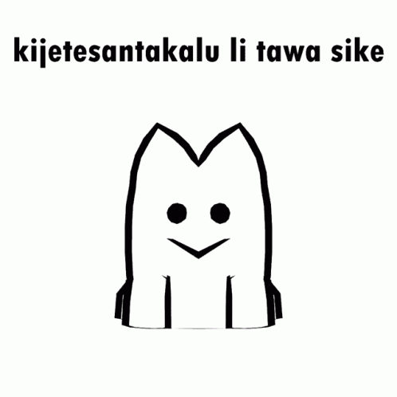

A constructed language! But what is that?
Constructed languages are languages that were intentionally developed, as opposed to forming over time from cultural development like a natural language (such as English) would. Some other popular constructed languages you may have heard of would be Klingon from Star Trek or Esperanto, which holds the title for the world's most popular constructed language. These languages can take many forms and often are made with their own unique and specific intentions in mind, but a commonality between them all is their ability to unite people in their respective con-lang's community. Often we have language as the sole barrier in our world where we would otherwise be easily connected to affinity groups wouldwide in mere seconds through services and forums like Discord or the like. Conlangs seek to eliminate that barrier! Some of the larger languages even have yearly international meetups, where people from accross the globe are able to communicate freely using dialectically neutral conlangs.
What makes toki pona unique?
When Sonja Lang set out to make toki pona in 2001, her specific goal was to create a language with as few words as possible. The reason for this were so that it could be easily learned, so that it would force it's users to be creative in their expression, and to simplify thoughts and communication between it's speakers. By design, 'toki pona', meaning 'good language' or 'good speak' in it's own tongue seeks to function as a positive force for those who choose to pick it up by meeting it's goals.
How can I learn toki pona?
Check out the resource links below to start your journey. You can get involved with the people working actively on projects and practising the language by joining relevant forums or discord groups. We are all united in our desire to learn, so feel free to share in that with us!